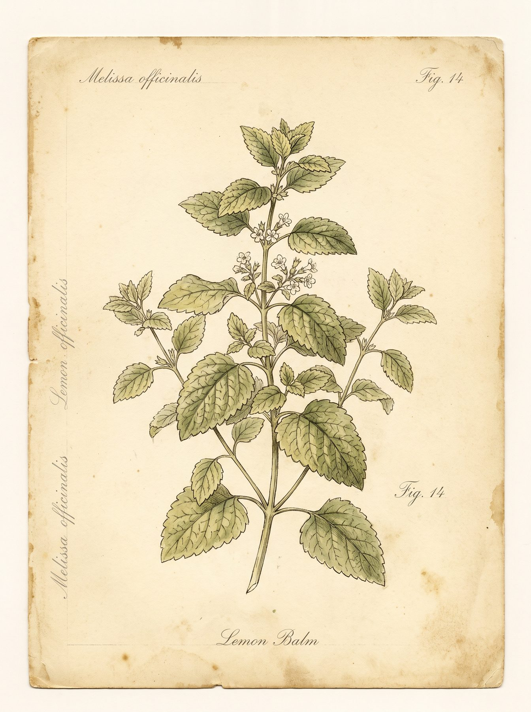
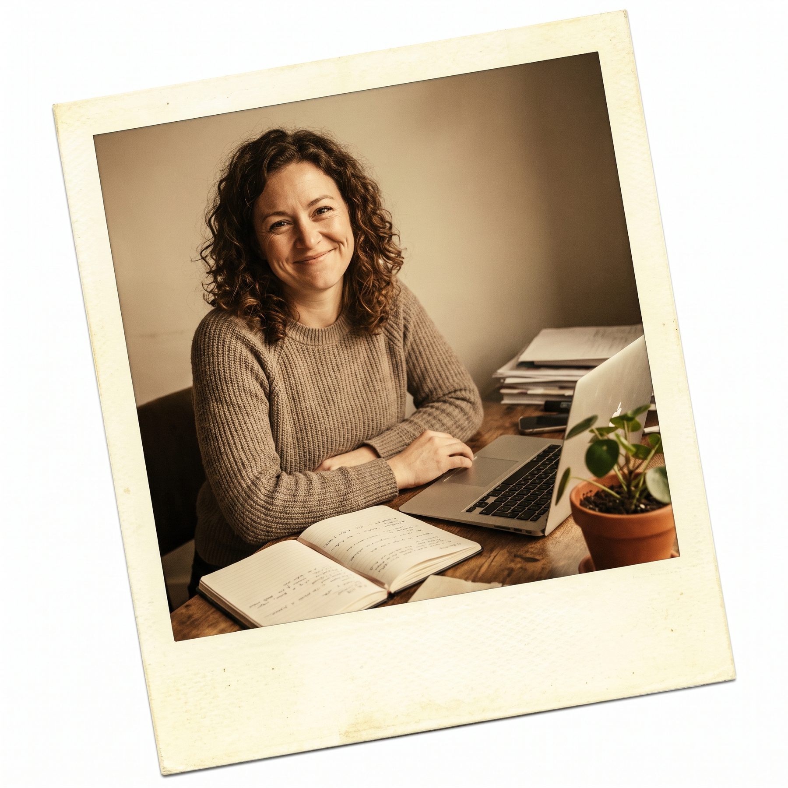

Emagrecimento e estilo de vida
Para quem quer perder peso com saude, ganhar energia e construir habitos que duram alem da dieta.
Ref. 01Atendimento presencial na Ilha do Governador e online para todo o Brasil. Emagrecimento, gestacao, diabetes, hipertensao, performance, transtornos alimentares, publico vegano. Um metodo pratico construido a partir da sua rotina, sem dieta da moda.

Muito antes de falar de macronutrientes, a gente precisa conversar sobre a sua vida. Sobre o que voce come no domingo a noite, no cafe do trabalho, no intervalo do estudio, na ida ao mercado com pressa.
Meu trabalho e construir com voce um plano que cabe na rotina em vez de uma rotina que gira em torno de regras. Em vez de dietas da moda, um metodo pratico com acompanhamento humano. Em vez de protocolo, um plano desenhado a partir do que voce come, do que voce gosta e do que faz sentido.
Atendo presencialmente na Ilha do Governador, e online para todo o Brasil. Agenda aberta de segunda a sexta, das 08h00 as 20h00.
Tais Ferreira, CRN ativa
Nutricao clinica e comportamental
A primeira sessao dura em media uma hora e comeca com uma conversa aberta. Quero entender a sua historia, nao so clinica, mas de vida. O que voce ja tentou, o que funcionou, o que nao funcionou, o que voce tem medo de tentar de novo.
Em seguida, a gente parte para a avaliacao. Historia clinica detalhada, habitos atuais, qualidade do sono, nivel de estresse, rotina de atividade fisica. Medicoes de composicao corporal com bioimpedancia: peso, IMC, percentual de gordura, relacao cintura-quadril.
Ao final, eu construo e entrego o primeiro rascunho do seu plano alimentar. Nao um cardapio generico, mas um documento personalizado construido a partir de tudo que a gente conversou. Com lista de compras, horarios flexiveis e refeicoes que cabem na sua rotina.
A partir dai, a gente marca retornos. O primeiro geralmente em 15 dias, depois mensais. E entre as consultas, tem suporte por WhatsApp para duvidas do dia a dia. Mudanca que dura comeca com consistencia, e consistencia comeca com alguem do outro lado.
Para tratar e prevenir doencas com a alimentacao como ferramenta.
Atendo pessoas com diabetes tipo 1 e 2, hipertensao, obesidade, sindrome metabolica, intolerancias e doencas cardiovasculares. Tambem acompanhamento pos-cirurgia bariatrica e suporte nutricional durante tratamentos como quimioterapia.
Em todos os casos, o cardapio e desenhado em conjunto com o medico que acompanha voce. Nao substitui tratamento, completa.
Para mudar a relacao com a comida, nao so a composicao do prato.
Muitos pacientes chegam ao consultorio depois de anos de dietas que nao duraram. Em vez de propor mais uma, a gente trabalha a relacao com a comida. Compulsao, alimentacao emocional, ansiedade, ciclo de restricao e excesso.
O objetivo e construir uma relacao mais leve, em que a alimentacao e uma aliada e nao uma fonte constante de culpa.
Para quem quer perder peso com saude, ganhar energia e construir habitos que duram alem da dieta.
Ref. 01Planejamento gestacional, gestacao trimestre a trimestre e recuperacao pos-parto com suporte nutricional.
Ref. 02Diabetes, hipertensao, obesidade, intolerancias e doencas cardiovasculares. Tratamento nutricional clinico.
Ref. 03Hipertrofia, definicao, resistencia ou perda de gordura com objetivo estetico. Plano alinhado ao treino.
Ref. 04Otimizar nutricao pre e pos treino, acelerar recuperacao e atingir metas especificas da temporada.
Ref. 05Solucoes praticas para quem tem agenda corrida. Refeicoes rapidas, marmitas e estrategia de viagens.
Ref. 06Habitos saudaveis na adolescencia, questoes de crescimento, foco nos estudos e energia para o dia a dia.
Ref. 07Nutricao equilibrada sem produtos de origem animal, com suplementacao quando necessario.
Ref. 08Sou a Tais Ferreira, nutricionista formada em nutricao clinica e comportamental, com foco em emagrecimento, reeducacao alimentar, gestacao e performance. Atendo presencialmente na Ilha do Governador, em consultorio proprio, e online para quem mora em qualquer lugar do Brasil.
Minha formacao e voltada a duas frentes que se complementam: o tratamento clinico de doencas como diabetes, hipertensao e obesidade, e o trabalho comportamental com pacientes que ja tentaram de tudo e precisam de um metodo que respeite a vida real.
Atendo desde adolescentes em fase de crescimento ate idosos com condicoes cronicas. Tambem trabalho com publico vegano, vegetariano e pessoas em recuperacao de transtornos alimentares. Para mim, cada pessoa que chega ao consultorio tem um contexto proprio, e o plano e sempre desenhado a partir desse contexto.
Minha agenda e aberta de segunda a sexta, das 08h00 as 20h00. Atendo particular e alguns convenios. Para saber valores e disponibilidade, o caminho mais rapido e o WhatsApp.

A primeira sessao dura sessenta minutos. A gente conversa sobre sua rotina, seus exames e o que voce ja tentou.